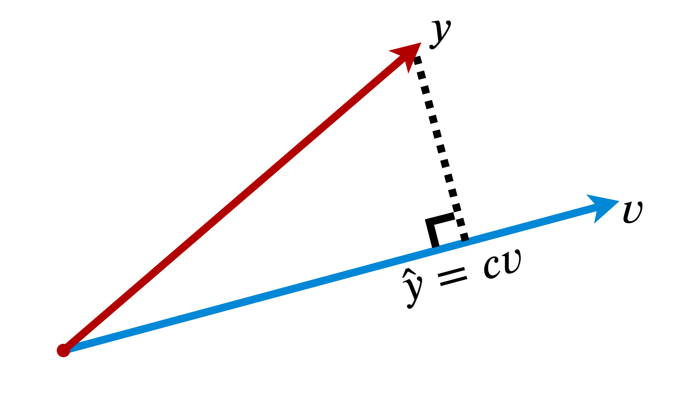

10 Fundamental Theorems for Econometrics
2020-08-13 – v0.1
Preface

A list of the 10 most important econometric theorems was circulated on Twitter, based on what Jeffrey Wooldridge claims are the bases for most econometrics. As a political scientist with applied statistics training, this list caught my attention because it contains many of the theorems I see used in (methods) papers, but which I typically glaze over for lack of understanding. The complete list (slightly paraphrased) is:
- Law of Iterated Expectations, Law of Total Variance
- Linearity of Expectations, Variance of a Sum
- Jensen’s Inequality, Chebyshev’s Inequality
- Linear Projection and its Properties
- Weak Law of Large Numbers, Central Limit Theorem
- Slutsky’s Theorem, Continuous Convergence Theorem, Asymptotic Equivalence Lemma
- Big Op, Little op, and the algebra of them
- Delta Method
- Frisch-Waugh Partialling Out
- For PD matrices A and B, A-B is PSD if and only if \(B^{-1} - A^{-1}\) is PSD.
As an exercise in improving my own knowledge of these fundamentals, I decided to work through each theorem – using various lecture notes found online, and excellent textbooks like Aronow & Miller’s (2019) Foundations of Agnostic Statistics, Angrist and Pischke’s (2008) Mostly Harmless Econometrics, and Wasserman’s (2004) All of Statistics.
I found for a list of important theorems there were few consistent sources that contained explanations and proofs of each item. Often, textbooks had excellent descriptive intuitions but would hold back on offering full, annotated proofs. Or full proofs were offered without explaining the wider significance of the theorems. Some of the concepts, moreover, had different definitions dependent on the field or source of the proof (like Slutsky’s Theorems)!
This resource is an attempt to collate my writing on these theorems – the intuitions, proofs, and examples – into a single document. I have taken some liberties in doing so – for instance combining Wooldridge’s first two points into a single chapter on ‘Expectation Theorems’, and often omit continuous proofs where discrete proofs are similar and easier to follow. That said, I have tried to be reasonably exhaustive in my proofs so that they are accessible to those (like me) without a formal statistics background.
The inspiration for this project was Jeffrey Wooldridge’s list, an academic whose work I admire greatly. This document, however, is in no way endorsed by or associated with him. Most of the applied examples (and invisible corrections to my maths) stem from discussions with Andy Eggers and Musashi Harukawa. There will inevitably still be some errors, omissions, and confusing passages. I would be more than grateful to receive any feedback at thomas.robinson@durham.ac.uk or via the GitHub repo for this project.
Prerequisites
I worked through these proofs learning the bits of maths I needed as I went along. For those who want to consult Google a little less than I had to, the following should ease you into the more formal aspects of this document:
A simple working knowledge of probability theory
The basics of expectation notation, but you don’t need to know any expectation rules (I cover the important ones in Chapter 1).
A basic understanding of linear algebra (i.e. how you multiply matrices, what transposition is, and what the identity matrix looks like). More complicated aspects like eigenvalues and Gaussian elimination make fleeting appearances, particularly in Chapter 9, but these are not crucial.
Where relevant, I provide coded examples in R. I’ve kept my use of packages to a minimum so the code should be reasonably easy to read/port to other programming languages.
Version notes
v0.1
This is the first complete draft, and some sections are likely to be changed in future versions. For instance, in Chapter 9 I would like to provide a more comprehensive overview of quadratic form in linear algebra, how we derive gradients, and hence the shape of PD matrices. Again, any suggestions on ways to improve/add to this resource are very much welcome!
10 Fundamental Theorems for Econometrics by Thomas Samuel Robinson is licensed under CC BY-NC-SA 4.0
References
Angrist, Joshua D, and Jörn-Steffen Pischke. 2008. Mostly Harmless Econometrics: An Empiricist’s Companion. Princeton university press.
Aronow, P. M., and B. T. Miller. 2019. Foundations of Agnostic Statistics. Cambridge University Press. https://books.google.co.uk/books?id=u1N-DwAAQBAJ.
Wasserman, Larry. 2004. All of Statistics: A Concise Course in Statistical Inference. Springer Texts in Statistics. New York, NY: Springer New York. https://doi.org/10.1007/978-0-387-21736-9.